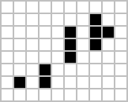
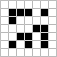

Conway's Game of Life


The Game of Life, also known simply as Life, is a cellular automaton devised by the British mathematician John Horton Conway in 1970.[1]
The "game" is a zero-player game, meaning that its evolution is determined by its initial state, requiring no further input. One interacts with the Game of Life by creating an initial configuration and observing how it evolves.
Rules
The universe of the Game of Life is an infinite two-dimensional orthogonal grid of square cells, each of which is in one of two possible states, alive or dead. Every cell interacts with its eight neighbours, which are the cells that are horizontally, vertically, or diagonally adjacent. At each step in time, the following transitions occur:
- Any live cell with fewer than two live neighbours dies, as if caused by under-population.
- Any live cell with two or three live neighbours lives on to the next generation.
- Any live cell with more than three live neighbours dies, as if by overcrowding.
- Any dead cell with exactly three live neighbours becomes a live cell, as if by reproduction.
The initial pattern constitutes the seed of the system. The first generation is created by applying the above rules simultaneously to every cell in the seed—births and deaths occur simultaneously, and the discrete moment at which this happens is sometimes called a tick (in other words, each generation is a pure function of the preceding one). The rules continue to be applied repeatedly to create further generations.
Origins
Conway was interested in a problem presented in the 1940s by mathematician John von Neumann, who attempted to find a hypothetical machine that could build copies of itself and succeeded when he found a mathematical model for such a machine with very complicated rules on a rectangular grid. The Game of Life emerged as Conway's successful attempt to drastically simplify von Neumann's ideas. The game made its first public appearance in the October 1970 issue of Scientific American, in Martin Gardner's "Mathematical Games" column. From a theoretical point of view, it is interesting because it has the power of a universal Turing machine: that is, anything that can be computed algorithmically can be computed within Conway's Game of Life.[2][3] Gardner wrote:
The game made Conway instantly famous, but it also opened up a whole new field of mathematical research, the field of cellular automata ... Because of Life's analogies with the rise, fall and alterations of a society of living organisms, it belongs to a growing class of what are called "simulation games" (games that resemble real life processes).
Ever since its publication, Conway's Game of Life has attracted much interest, because of the surprising ways in which the patterns can evolve. Life provides an example of emergence and self-organization. It is interesting for computer scientists, physicists, biologists, biochemists, economists, mathematicians, philosophers, generative scientists and others to observe the way that complex patterns can emerge from the implementation of very simple rules. The game can also serve as a didactic analogy, used to convey the somewhat counter-intuitive notion that "design" and "organization" can spontaneously emerge in the absence of a designer. For example, philosopher and cognitive scientist Daniel Dennett has used the analogue of Conway's Life "universe" extensively to illustrate the possible evolution of complex philosophical constructs, such as consciousness and free will, from the relatively simple set of deterministic physical laws governing our own universe.[4][5][6]
The popularity of Conway's Game of Life was helped by its coming into being just in time for a new generation of inexpensive minicomputers which were being released into the market. The game could be run for hours on these machines, which would otherwise have remained unused at night. In this respect, it foreshadowed the later popularity of computer-generated fractals. For many, Life was simply a programming challenge: a fun way to use otherwise wasted CPU cycles. For some, however, Life had more philosophical connotations. It developed a cult following through the 1970s and beyond; current developments have gone so far as to create theoretic emulations of computer systems within the confines of a Life board.[7][8]
Conway chose his rules carefully, after considerable experimentation, to meet these criteria:
- There should be no explosive growth.
- There should exist small initial patterns with chaotic, unpredictable outcomes.
- There should be potential for von Neumann universal constructors.
- The rules should be as simple as possible, whilst adhering to the above constraints.[9]
Examples of patterns
The earliest interesting patterns in the Game of Life were discovered without the use of computers. The simplest static patterns ("still lifes") and repeating patterns ("oscillators"—a superset of still lifes) were discovered while tracking the fates of various small starting configurations using graph paper, blackboards, physical game boards (such as Go) and the like. During this early research, Conway discovered that the R-pentomino failed to stabilize in a small number of generations. In fact, it takes 1103 generations to stabilize, by which time it has a population of 116 and has fired six escaping gliders[10] (these were the first gliders ever discovered).[11]
Many different types of patterns occur in the Game of Life, including still lifes, oscillators, and patterns that translate themselves across the board ("spaceships"). Some frequently occurring[12][13] examples of these three classes are shown below, with live cells shown in black, and dead cells shown in white.
|
|
|
||||||||||||||||||||||||||


{kind=link}
{kind=link}
{kind=link}
{kind=link}
The "pulsar"[14] is the most common period 3 oscillator. The great majority of naturally occurring oscillators are period 2, like the blinker and the toad, but oscillators of all but finitely many periods are known to exist,[15] and oscillators of periods 4, 8, 14, 15, 30 and a few others have been seen to arise from random initial conditions.[16] Patterns called "Methuselahs" can evolve for long periods before stabilizing, the first-discovered of which was the R-pentomino. "Diehard" is a pattern that eventually disappears (rather than merely stabilizing) after 130 generations, which is conjectured to be maximal for patterns with seven or fewer cells.[17] "Acorn" takes 5206 generations to generate 633 cells including 13 escaped gliders.[18]

The R-pentomino
|

Acorn
|
{kind=link}
Conway originally conjectured that no pattern can grow indefinitely—i.e., that for any initial configuration with a finite number of living cells, the population cannot grow beyond some finite upper limit. In the game's original appearance in "Mathematical Games", Conway offered a $50 prize to the first person who could prove or disprove the conjecture before the end of 1970. One way to disprove it would be to discover patterns that keep adding counters to the field: a "gun", which would be a configuration that repeatedly shoots out moving objects such as the "glider". Another way of disproving the conjecture would be to construct a "puffer train", which would be a configuration that moves but leaves behind a trail of persistent "smoke".[19]
The prize was won in November of the same year by a team from the Massachusetts Institute of Technology, led by Bill Gosper; the "Gosper glider gun" shown below produces its first glider on the 15th generation, and another glider every 30th generation from then on. This first glider gun is still the smallest one known:[20]

Smaller patterns were later found that also exhibit infinite growth. All three of the following patterns grow indefinitely: the first two create one "block-laying switch engine"[21] each, while the third creates two. The first has only 10 live cells (which has been proven to be minimal).[22] The second fits in a 5 × 5 square. The third is only one cell high:
|   |
{kind=link}
{kind=link}
{kind=link}
Later discoveries included other "guns", which are stationary, and which shoot out gliders or other spaceships; "puffers", which move along leaving behind a trail of debris; and "rakes", which move and emit spaceships.[23] Gosper also constructed the first pattern with an asymptotically optimal quadratic growth rate, called a "breeder", or "lobster", which worked by leaving behind a trail of guns.
It is possible for gliders to interact with other objects in interesting ways. For example, if two gliders are shot at a block in just the right way, the block will move closer to the source of the gliders. If three gliders are shot in just the right way, the block will move farther away. This "sliding block memory" can be used to simulate a counter. It is possible to construct logic gates such as AND, OR and NOT using gliders. It is possible to build a pattern that acts like a finite state machine connected to two counters. This has the same computational power as a universal Turing machine, so the Game of Life is theoretically as powerful as any computer with unlimited memory and no time constraints: it is Turing complete.[2][3]
Furthermore, a pattern can contain a collection of guns that fire gliders in such a way as to construct new objects, including copies of the original pattern. A "universal constructor" can be built which contains a Turing complete computer, and which can build many types of complex objects, including more copies of itself.[3]
Self-replication
On May 18, 2010, Andrew J. Wade announced a self-constructing pattern dubbed Gemini which creates a copy of itself while destroying its parent.[24][25] This pattern replicates in 34 million generations, and uses an instruction tape made of gliders which oscillate between two stable configurations made of Chapman-Greene construction arms. These, in turn, create new copies of the pattern, and destroy the previous copy. Gemini is a spaceship.[26]
Iteration
From a random initial pattern of living cells on the grid, observers will find the population constantly changing as the generations tick by. The patterns that emerge from the simple rules may be considered a form of beauty. Small isolated subpatterns with no initial symmetry tend to become symmetrical. Once this happens, the symmetry may increase in richness, but it cannot be lost unless a nearby subpattern comes close enough to disturb it. In a very few cases the society eventually dies out, with all living cells vanishing, though this may not happen for a great many generations. Most initial patterns eventually "burn out", producing either stable figures or patterns that oscillate forever between two or more states;[27][28] many also produce one or more gliders or spaceships that travel indefinitely away from the initial location. Spaceships can travel at most one cell per unit time: so this velocity is set to be the cellular automaton speed of light and denoted .
Algorithms
Early patterns with unknown futures, such as the R-pentomino, led computer programmers across the world to write programs to track the evolution of Life patterns. Most of the early algorithms were similar; they represented Life patterns as two-dimensional arrays in computer memory. Typically two arrays are used, one to hold the current generation, and one in which to calculate its successor. Often 0 and 1 represent dead and live cells respectively. A nested for-loop considers each element of the current array in turn, counting the live neighbours of each cell to decide whether the corresponding element of the successor array should be 0 or 1. The successor array is displayed. For the next iteration the arrays swap roles so that the successor array in the last iteration becomes the current array in the next iteration.
A variety of minor enhancements to this basic scheme are possible, and there are many ways to save unnecessary computation. A cell that did not change at the last time step, and none of whose neighbours changed, is guaranteed not to change at the current time step as well. So, a program that keeps track of which areas are active can save time by not updating the inactive zones.[29]
If it is desired to save memory, the storage can be reduced to one array plus 3 line buffers. One line buffer is used to calculate the successor state for a line, then the second line buffer is used to calculate the successor state for the next line. The first buffer is then written to its line and freed to hold the successor state for the third line. If a toroidal array is used, a third buffer is needed so that the original state of the first line in the array can be saved until the last line is computed.
In principle, the Life field is infinite, but computers have finite memory. This leads to problems when the active area encroaches on the border of the array. Programmers have used several strategies to address these problems. The simplest strategy is simply to assume that every cell outside the array is dead. This is easy to program, but leads to inaccurate results when the active area crosses the boundary. A more sophisticated trick is to consider the left and right edges of the field to be stitched together, and the top and bottom edges also, yielding a toroidal array. The result is that active areas that move across a field edge reappear at the opposite edge. Inaccuracy can still result if the pattern grows too large, but at least there are no pathological edge effects. Techniques of dynamic storage allocation may also be used, creating ever-larger arrays to hold growing patterns.
Alternatively, the programmer may abandon the notion of representing the Life field with a 2-dimensional array, and use a different data structure, like a vector of coordinate pairs representing live cells. This approach allows the pattern to move about the field unhindered, as long as the population does not exceed the size of the live-coordinate array. The drawback is that counting live neighbours becomes a search operation, slowing down simulation speed. With more sophisticated data structures this problem can also be largely solved.
For exploring large patterns at great time-depths, sophisticated algorithms such as Hashlife may be useful. There is also a method, applicable to other cellular automata too, for implementation of the Game of Life using arbitrary asynchronous updates whilst still exactly emulating the behaviour of the synchronous game.[30]
Variations on Life
Since Life's inception, new similar cellular automata have been developed. The standard Game of Life, in which a cell is "born" if it has exactly 3 neighbours, stays alive if it has 2 or 3 living neighbours, and dies otherwise, is symbolised as "B3/S23". The first number, or list of numbers, is what is required for a dead cell to be born. The second set is the requirement for a live cell to survive to the next generation. Hence "B6/S16" means "a cell is born if there are 6 neighbours, and lives on if there are either 1 or 6 neighbours". Cellular automata on a two-dimensional grid that can be described in this way are known as Life-like cellular automata. Another common Life-like automaton, HighLife, is described by the rule B36/S23, because having 6 neighbours, in addition to the original game's B3/S23 rule, causes a birth. HighLife is best known for its frequently occurring replicators.[31][32] Additional Life-like cellular automata exist, although the vast majority of them produce universes that are either too chaotic or too desolate to be of interest.

Some variations on Life modify the geometry of the universe as well as the rule. The above variations can be thought of as 2-D square, because the world is two-dimensional and laid out in a square grid. 1-D square variations (known as elementary cellular automata)[33] and 3-D square variations have been developed, as have 2-D hexagonal and 2-D triangular variations. Variant using non-periodic tile grids has also been made.[34]
Conway's rules may also be generalized such that instead of two states (live and dead) there are three or more. State transitions are then determined either by a weighting system or by a table specifying separate transition rules for each state; for example, Mirek's Cellebration's multi-coloured "Rules Table" and "Weighted Life" rule families each include sample rules equivalent to Conway's Life.
Patterns relating to fractals and fractal systems may also be observed in certain Life-like variations. For example, the automaton B1/S12 generates four very close approximations to the Sierpiński triangle when applied to a single live cell. The Sierpiński triangle can also be observed in Conway's Game of Life by examining the long-term growth of a long single-cell-thick line of live cells,[35] as well as in HighLife, Seeds (B2/S), and Wolfram's Rule 90.[36]
Immigration is a variation that is very similar to Conway's Game of Life, except that there are two ON states (often expressed as two different colours). Whenever a new cell is born, it takes on the ON state that is the majority in the three cells that gave it birth. This feature can be used to examine interactions between spaceships and other "objects" within the game.[37] Another similar variation, called QuadLife, involves four different ON states. When a new cell is born from three different ON neighbours, it takes on the fourth value, and otherwise, like Immigration, it takes the majority value.[38] Except for the variation among ON cells, both of these variations act identically to Life.
Entertainment
Video games
Some games for entertainment purposes have been developed from the game of Life. One such game, for two players who each interact with the "game" once per tick, is based directly upon Conway's Life. Live cells have one of two colours, and a player wins when all cells of the opponent's colour are eliminated. When a dead cell has three live neighbours, it becomes live in the same colour as the majority of its neighbours, as in the aforementioned Immigration. The game starts with a random or pre-chosen starting pattern with half the live cells of each colour. After one iteration, the first player may add one cell of his or her own colour and remove one cell of his or her opponent's colour. After the next iteration, the other player can do the same, and so forth.[citation needed] Other two-player variants of the Game of Life have also been developed.[39]
In Populous II, one of the 'divine intervention' effects is a fungus that grows according to the rules of the Game of Life.
Acclaimed game developer Jonathan Blow notes the game of life as a big influence on his design philosophy.[40]
Music
Various musical composition techniques use Conway's Life, especially in MIDI sequencing.[41] A variety of programs exist for creating sound from patterns generated in Life. (see footnotes for links to examples.)[42][43][44]
The Native Instruments modular sound generation/processing software package Reaktor features a drum machine with an integrated sequencer which implements Life.
Notable Life programs
{kind=link}
Computers have been used to follow Life configurations from the earliest days. When John Conway was first investigating how various starting configurations developed, he tracked them by hand using a Go board with its black and white stones. This was tedious and prone to errors. The first-ever Life program was written by John Francis (an undergraduate student at Cambridge) on an IBM 360, and was used to automate this process and track the fate of the "R" pentomino for 1000 generations.[citation needed] The first interactive Life program was written in ALGOL 68 for the PDP-7 by M. J. T. Guy and S. R. Bourne. The results were published in the October 1970 issue of Scientific American[45] and - regarding the use of the program - reports "Without its help, some discoveries about the game would have been difficult to make."
There are now thousands of Life programs online, so a full list will not be provided here. The following is a small selection of programs with some special claim to notability, such as popularity or unusual features. Most of these programs incorporate a graphical user interface for pattern editing and simulation, the capability for simulating multiple rules including Life, and a large library of interesting patterns in Life and other CA rules.
- Conway's Game of Life, by Alan Hensel. A pop-up Java web applet with fast simulation algorithms and a large library of interesting Life patterns.
- Golly. A cross-platform (Windows, Macintosh and Linux) open-source simulation system for Life and other cellular automata, by Andrew Trevorrow and Tomas Rokicki. It includes the hashlife algorithm for extremely fast generation, and Perl or Python scriptability for both editing and simulation.
- Mirek's Cellebration. Free 1-D and 2-D cellular automata viewer, explorer and editor for Windows. Includes powerful facilities for simulating and viewing a wide variety of CA rules including Life, and a scriptable editor.
- Xlife. A cellular-automaton laboratory by Jon Bennett. The standard UNIX X11 Life simulation application for a long time, it has also been ported to Windows. Can handle cellular automaton rules with the same neighbourhood as Life, and up to eight possible states per cell.
See also
- Artificial life
- Glory Season, a novel by David Brin, is set in a future society where the Game of Life is played in a competitive 2-player mode
- Hacker Emblem, depicting a glider
- Langton's ant, another rule-set that uses a rectangular grid and shows emergent patterns
- Poietic Generator, a "human" game of life.
References
- ^ Gardner, Martin (1970-10). "Mathematical Games - The fantastic combinations of John Conway's new solitaire game "life"". Scientific American 223. pp. 120–123. ISBN 0-89454-001-7. Archived from the original on 2009-06-03. Retrieved 2011-06-26.
- ^ a b Paul Chapman (November 11, 2002). "Life Universal Computer". Retrieved July 12, 2009.
- ^ a b c Berlekamp, E. R.; Conway, John Horton; Guy, R.K. (2001 2004). Winning Ways for your Mathematical Plays (2nd ed.). A K Peters Ltd. ISBN 978-1-56881-130-7
- ^ Dennett, D.C. (1991). Consciousness Explained. Boston: Back Bay Books. ISBN 0-316-18066-1
- ^ Dennett, D.C. (1995). Darwin's Dangerous Idea: Evolution and the Meanings of Life. New York: Simon & Schuster. ISBN 0-684-82471-X
- ^ Dennett, D.C. (2003). Freedom Evolves. New York: Penguin Books. ISBN 0-14-200384-0
- ^ Paul Rendell (January 12, 2005). "A Turing Machine in Conway's Game of Life". Retrieved July 12, 2009.
- ^ Adam P. Goucher. "Spartan universal computer-constructor". LifeWiki. Retrieved July 12, 2009.
- ^ Conway, private communication to the 'Life list', 14 April 1999.
- ^ "R-pentomino". LifeWiki. Retrieved July 12, 2009.
- ^ Stephen A. Silver. "Glider". The Life Lexicon. Retrieved July 12, 2009.
- ^ "Census Results in Conway's Game of Life". The Online Life-Like CA Soup Search. Retrieved July 12, 2009.
- ^ "Spontaneous appeared Spaceships out of Random Dust". Achim Flammenkamp (1995-12-09). Retrieved July 10,2012.
- ^ "Pulsar". Eric Weisstein's Treasure Trove of Life. Retrieved 2008-09-16.
- ^ Game of Life Status page, Jason Summers, retrieved 2012-02-23.
- ^ Achim Flammenkamp (2004-09-07). "Most seen natural occurring ash objects in Game of Life". Retrieved 2008-09-16.
- ^ Stephen A. Silver. "Diehard". The Life Lexicon. Retrieved July 12, 2009.
- ^ Koenig, H. (February 21, 2005). "New Methuselah Records". Retrieved January 24, 2009.
- ^ Stephen A. Silver. "Puffer train". The Life Lexicon. Retrieved July 12, 2009.
- ^ Stephen A. Silver. "Gosper glider gun". The Life Lexicon. Retrieved July 12, 2009.
- ^ "Block-laying switch engine". LifeWiki. Retrieved July 12, 2009.
- ^ "Infinite Growth". Eric Weisstein's Treasure Trove of Life. Retrieved 2008-09-16.
- ^ Stephen A. Silver. "Rake". The Life Lexicon. Retrieved July 12, 2009.
- ^ "Universal Constructor Based Spaceship". Conwaylife.com. Retrieved 2012-06-24.
- ^ "Gemini - LifeWiki". Conwaylife.com. Retrieved 2012-06-24.
- ^ Aron, Jacob (16 June 2010). "First replicating creature spawned in life simulator". New Scientist
- ^ Andrzej Okrasinski. "Game of Life Object Statistics". Archived from the original on 2009-07-27. Retrieved July 12, 2009.
- ^ Nathaniel Johnston. "The Online Life-Like CA Soup Search". Retrieved July 12, 2009.
- ^ Alan Hensel. "About my Conway's Game of Life Applet". Retrieved July 12, 2009.
- ^ Nehaniv, Chrystopher L. (2002). "Self-Reproduction in Asynchronous Cellular Automata". 2002 NASA/DoD Conference on Evolvable Hardware (15–18 July 2002, Alexandria, Virginia, USA). IEEE Computer Society Press. pp. 201–209
- ^ HighLife - An Interesting Variant of Life by David Bell (.zip file)
- ^ Stephen A. Silver. "Replicator". The Life Lexicon. Retrieved July 12, 2009.
- ^ "Elementary Cellular Automaton". Wolfram Mathworld. Retrieved July 12, 2009.
- ^ "First gliders navigate ever-changing Penrose universe". New Scientist.
- ^ "One cell thick pattern". LifeWiki. Retrieved July 12, 2009.
- ^ "Life Imitates Sierpinski". ConwayLife.com forums. Retrieved July 12, 2009.
- ^ "Immigration". Eric Weisstein's Treasure Trove of Life. Retrieved 2008-09-16.
- ^ "QuadLife". Eric Weisstein's Treasure Trove of Life. Retrieved 2008-09-16.
- ^ Mark Levene; George Roussos (2002). "A Two-Player Game of Life". International Journal of Modern Physics C [Computational Physics and Physical Computation] 14 (2): 195. arXiv:cond-mat/0207679. doi:10.1142/S0129183103004346.
- ^ "A new, short speech about game design". Braid-game.com. 2010-02-07. Retrieved 2012-06-24.
- ^ Burraston, Dave; Edmonds, Ernest; Livingstone, Dan; Miranda, Eduardo Reck (2004). "Cellular Automata in MIDI based Computer Music". Proceedings of the 2004 International Computer Music Conference. CiteSeerX: 10.1.1.6.3882 hdl:10453/1425.
- ^ "glitchDS – Cellular Automaton Sequencer For The Nintendo DS". Synthtopia.com. 2008-05-29. Retrieved 2012-06-24.
- ^ "Game Of Life Music Sequencer". Synthtopia.com. 2009-04-29. Retrieved 2012-06-24.
- ^ "Game Of Life Music Sequencer For iOS, Runxt Life". Synthtopia.com. 2011-01-12. Retrieved 2012-06-24.
- ^ Gardner, Martin (October 1970). "Mathematical Games: The fantastic combinations of John Conway's new solitaire game "Life"". Scientific American 223: 120–123
External links
| Wikimedia Commons has media related to: Game of Life |
- Conway's Game of Life at the Open Directory Project
- Life Lexicon, Extensive Life Lexicon (with many patterns)
- Game of Life News
- LifeWiki
- Cellular Automata FAQ — Conway's Game of Life
|
||||||||||||||||||||